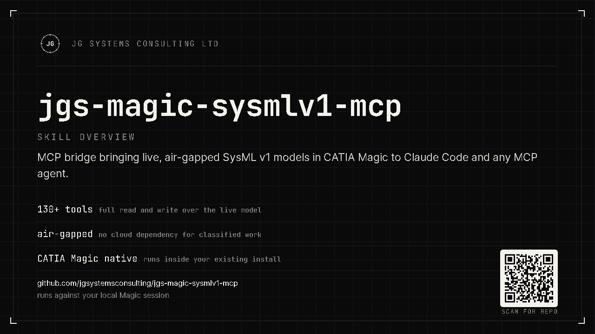

The model is too big to share
A real SysML project won't fit in a prompt. Copy-pasting fragments loses the structure that matters: the relationships, allocations, and traceability.
Your SysML v1 model lives inside CATIA Magic, and your AI assistant can't touch it. You can't paste a 100,000-element model into a chat window, and you certainly can't send a proprietary system design to the cloud. The JGS bridge brings the AI to the model instead: it exposes your live project to Claude Code or any MCP agent over a local, air-gapped connection, with 130+ tools to query, audit, and edit the real model in plain English. Nothing leaves your machine.
JG Systems Consulting Ltd. · CATIA Magic MCP

MBSE models grow into tens of thousands of elements. Navigating them, auditing coverage, and keeping requirements traceable is slow manual work, and the one tool that could help, your AI assistant, is locked out. Two walls stand in the way.
A real SysML project won't fit in a prompt. Copy-pasting fragments loses the structure that matters: the relationships, allocations, and traceability.
System designs are IP, often export-controlled. Sending them to a cloud LLM is a non-starter for defense, aerospace, and regulated programmes.
A Java plugin runs inside CATIA Magic and exposes the live model as MCP tools over a local HTTP connection. Your agent calls those tools directly, reading and (with a PRO licence) writing the actual model, in its own v1-native vocabulary.
Find, inspect, navigate, audit, trace requirements, and edit blocks, ports, requirements, and diagrams. Browse all tools by tier →
Ask your agent in normal language; it maps the request to the right tools and works on the live model, not a stale export.
Speaks SysML v1 vocabulary throughout (Blocks, IBDs, flow ports, allocations) so results match the model you already have.
The bridge binds to 127.0.0.1 only, validates its licence offline, and makes no
outbound network calls. Your model never leaves the workstation, which keeps the security
review short.
Loopback connection; no cloud service, no telemetry, no data export.
Ed25519 signature checked locally, with no licence server to call home to.
Runs beside the CATIA Magic you already trust. Nothing new to expose to the network.
pip install ./server, then create your MCP client config from examples/.mcp.json.example (see docs/install.md).
Copy plugin/ into your CATIA Magic user plugins directory and restart MSOSA. This step runs on your desktop app, so an agent cannot do it for you.
# install the server (from the repo root), then place the plugin and restart MSOSA
pip install ./serverPrefer your AI agent do it? The README carries a paste-in install prompt. Already installed? The usage guide walks the first session and the everyday workflows.
Start free with read-only access, no licence file. Upgrade when you want the AI to change the model, not just read it.
Query, navigate, audit, and report on the live model. No licence file required.
Full write access: create and modify blocks, ports, requirements, relationships, and diagrams through your agent. Licence file required.
Everything in PRO plus dangerous writes and Groovy scripting for power workflows. Licence file required.
The free tier reads your model. A PRO licence lets your agent author and refactor it: create requirements, wire allocations, fix findings, draft diagrams. ENTERPRISE adds scripting for repeatable, large-scale changes.